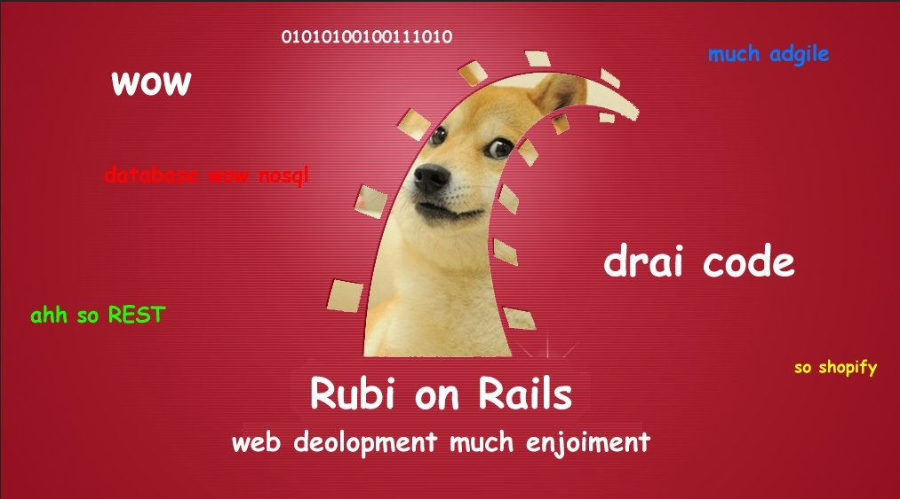

Ben / @bennett_stevens
Rails 4.1 is still in Beta, and some issues(brought up later) will be present.
4.1.0.beta1 branch, f706d5f945
Seems small but very powerful addition to the framework for API centric shops.
before_action do
request.variant = :phone if request.user_agent =~ /Nexus 5/
request.variant = :tablet if request.user_agent =~ /Nexus 7/
end
before_action is alias for before_filter
app/views/postings/show.html.erb
app/views/postings/show.html+tablet.erb
app/views/postings/show.html+phone.erb
class PostingsController < ApplicationController
def show
@posting = Posting.find(params[:id])
respond_to do |format|
format.json
format.html do |html|
html.tablet
html.phone
html.none
end
end
end
end
Replaces opt-in gems:
Based on basecamp/mail_view
('test' || 'spec')/mailers/previews/registration_mailer
class RegistrationMailer < ActionMailer::Preview
def new_user
RegistrationMailer.registration(User.last)
end
end
Become available at:
http://localhost:3000/rails/mailers/registraiton_mailer/new_user
Full list at:
http://localhost:3000/rails/mailers
Rails new. Rspec. Single Scaffold.
time ./bin/rake spec
real 0m2.861s
user 0m0.140s
sys 0m0.084s
time ./bin/rake spec
real 0m2.008s
user 0m0.141s
sys 0m0.086s
./bin/spring status
Spring is running:
87467 spring server | awesome_project | started 54 secs ago
87468 spring app | awesome_project | started 54 secs ago | development mode
Queryable statuses mapped to db integers.
class Posting < ActiveRecord::Base
enum status:[:draft, :published, :archived]
end
posting.draft! # => true
posting.published? # => false
posting.published! # => true
Posting.published # =>[#<Posting id: 1, status: 1>]
Rails.application.message_verifier(:remember_me).
generate(token)
Rails.application.message_verifier(:remember_me).
verify(signed_token)
It's just anarchy with some gems. ActiveRecord dependent gems ATM do not work.
More explicit
?
post :create, format: :js
Turns into
xhr :post, :create, format: :js
Check it out.
